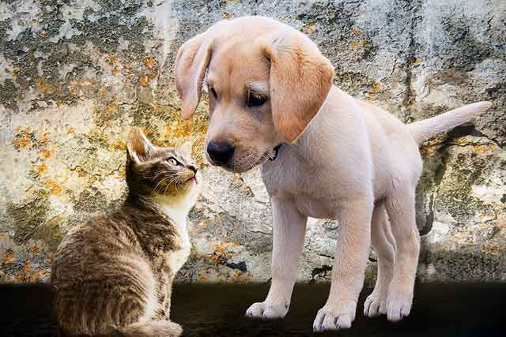
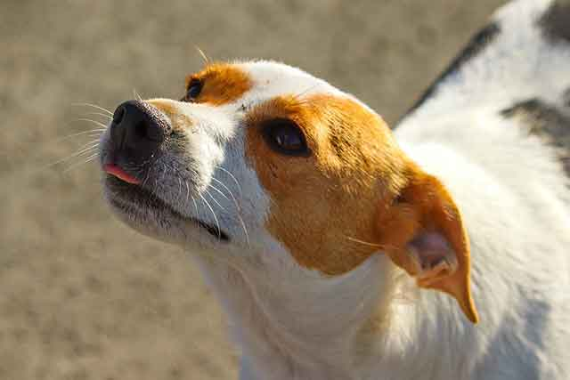
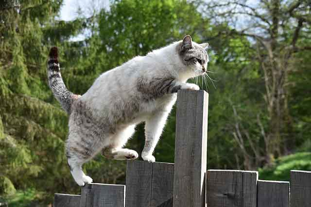
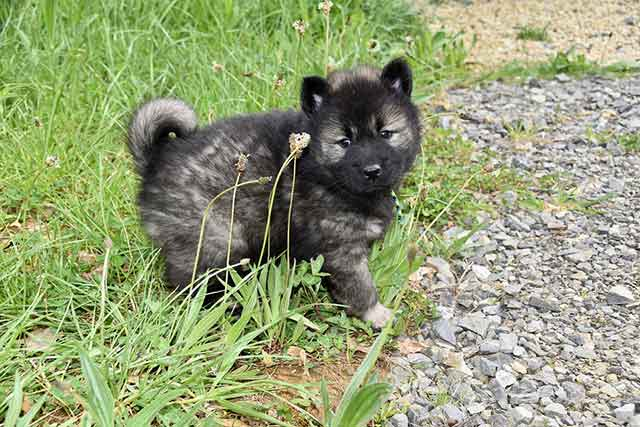
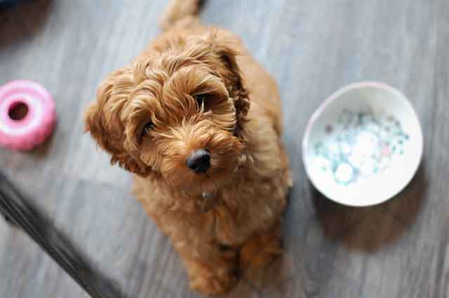

강아지와 고양이 같이 키울 수 있나요?
사랑스러운 반려동물. 강아지를 키우다가도 문득 고양이를 입양하고 싶다는 생각이 듭니다. 반대로 고양이를 키우다가도 강아지 매력에 흠뻑 취해 강아지를 입양하는 건 어떨까 고민을 하게 됩니다. 하지만 우리에게 흔히 알려진 사실은 '고양이와 강아지는 천적!'이라는 것이죠. 그래서 같이 키우는 것이 불가능하다고 생각하시는 분들도 많을 것 같습니다.
과연 강아지가 고양이 같이 키우는 것이 불가능할까요? 강아지와 고양이 같이 키울 수 있는지 알아볼게요!
"강아지, 고양이 같이 키우는 게 불가능은 아니에요!"
미디어를 통해 고양이와 강아지가 천적처럼 보이는 모습을 자주 보이긴 했지만, 두 반려동물을 함께 키우는 것이 불가능한 것은 아니랍니다. 오히려 외국 사례만 봐도 두 반려동물을 같이 키우는 모습을 종종 볼 수 있습니다. 그렇다고 무조건 같이 키울 수 있는 것은 아닙니다. 각각의 특성과 차이점을 잘 이해하고 합사할 수 있도록 배려와 노력이 필요합니다.
1) 고양이와 강아지는 다릅니다.
두 동물은 서로 의사소통 방식도 다르고 성향도 완전히 다릅니다. 그래서 서로를 이해하지 못하면, 함께 생활하는 것이 어려울 수 있습니다.
강아지는 비교적 활동적인 편입니다. 반면 고양이는 얌전하고 자기의 영역을 중요하게 생각하죠. 강아지는 반가움의 표현을 꼬리로 나타내지만, 고양이에게 꼬리를 흔든다는 것은 공격과 경계를 의미합니다.
2) 서로에게 필요한 것이 다릅니다.
강아지나 고양이 모두 각자만의 공간을 만들어 주는 것은 중요합니다. 강아지는 지붕이 있는 안락한 집, 고양이에게는 높은 곳에 올라갈 수 있는 캣타워가 좋겠죠.
강아지에겐 산책이 중요합니다. 매일 산책해 주며 스트레스를 해소할 방법을 열어주고 고양이에겐 마음 편히 배변 활동을 할 수 있는 화장실을 만들어 주는 것이 필요합니다.
3) 식사는 따로 해야 합니다.
둘이 친하게 지내는 데 문제가 없다면 식사도 같이해도 괜찮지 않으냐고 생각하기 쉽지만, 강아지와 고양이는 먹는 영양분이 다릅니다. 서로가 각자의 식사가 아닌 다른 식사를 한다면 건강에도 위험할 수 있습니다.
또, 밥 먹는 동안에는 서로 간의 경계 없이 편안한 마음에 먹고 싶을 것입니다. 아무리 친하게 잘 지낸다고 해도 100% 편하다고 장담할 수는 없는 일이죠. 따라서 식사는 될 수 있으면 따로 할 수 있도록 환경을 따로 만들어줘야 합니다.
무엇보다 고양이와 강아지의 습성을 이해하고 그들만의 방식을 존중하는 것이 중요합니다.
그래서 될 수 있으면 스트레스를 받지 않도록 해야겠죠. 두 반려동물이 함께 지내는 것이 어려운 것은 아닙니다. 하지만 쉬운 것도 아니죠. 또, 두 반려동물을 함께 지내기 위한 입양 타이밍도 중요한 만큼 만약 두 반려동물을 함께 해야 한다면 유아기 때부터 시작하는 것이 좋습니다.
[출처] 강아지와 고양이 같이 키울 수 있나요? ｜ 작성자 까미꾸러기